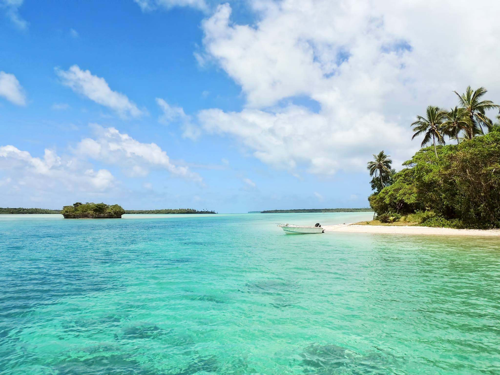
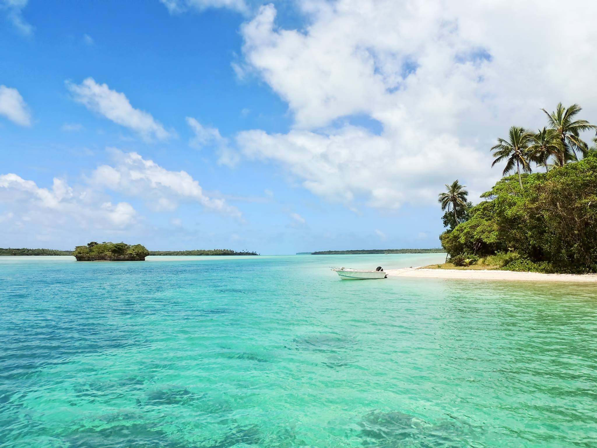

Your perfect island getaway awaits!
Welcome to Taniti Island, where paradise meets tranquility. Nestled in the heart of crystal-clear waters and surrounded by lush tropical landscapes, this island is a haven for those seeking an escape from the ordinary. Experience the stunning beauty of pristine beaches, vibrant coral reefs, and breathtaking sunsets that paint the sky in orange and pink. Immerse yourself in the rich island culture, try delicious local cuisine, and go on adventures that will create lasting memories. Taniti Island invites you to unwind, explore, and discover the beauty of our tropical oasis. Your perfect island getaway awaits!
Nestled in the Pacific, Taniti is a petite tropical island boasting an area of under 500 square miles. Despite its size, the landscape unfolds with diversity, offering sandy and rocky beaches, a secure harbor, luxuriant tropical rainforests, and a mountainous interior crowned by a modest yet active volcano. Home to an indigenous population of approximately 20,000, Taniti, until the recent surge in tourism, relied heavily on fishing and agriculture, shaping the island's economic landscape.